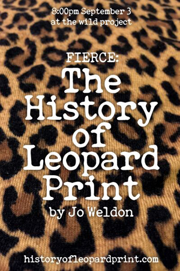

past performance |
|||
|
FIERCE: The History of Leopard Print by Jo Weldon showtimes:September 3 @ 8PM This is the premier presentation of HarperCollins author Jo Weldon's research into the history of leopard print! This segment will feature predominantly the past 100 years in the US, with a focus on how leopard print has been worn as people of all genders have had unprecedented opportunities to express themselves through fashion; however, the origin of the pattern will be traced from the lands where the cats themselves originate, and how it has been used before becoming a fashion print, and how that informs its current significance. (How does this pattern relate from Zulu culture to Lisa Frank? Seriously!) It's partly a light-hearted romp through cultural iconography, partly an examination of feminism, civil rights, gender, class, and fashion technology. Attendees will get a sense of the history, depth and meaning in the common things around them. |
 | ||
|
Jo will also be displaying part of her collection of over 100 years of vintage magazine ads featuring leopard print, and a few choice leopard items from her clothing collection. |
|||
upcoming performances |
|||
 |
|||
| EVQ Film Festival 2018 August 20-25 |
|||
performance archives |
|||
| 2018 | 2017 | 2016 | 2015 |
| 2014 | 2013 | 2012 | 2011 |
| 2010 | 2009 | 2008 | 2007 |